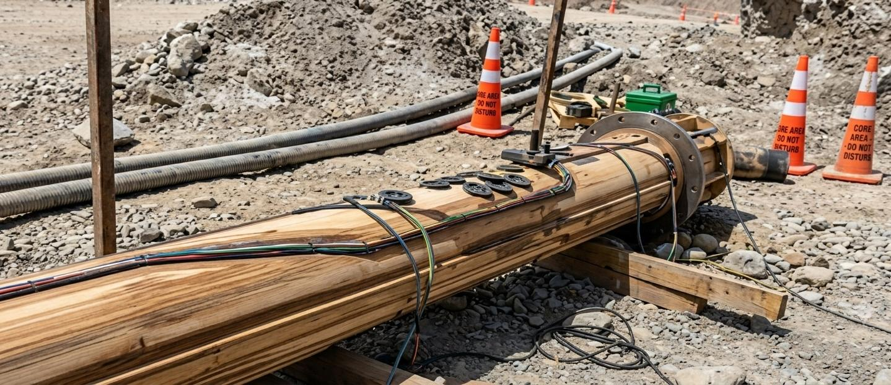
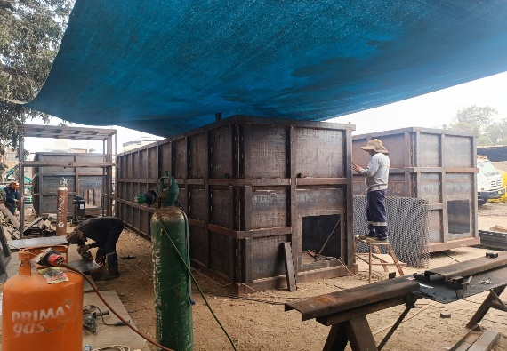
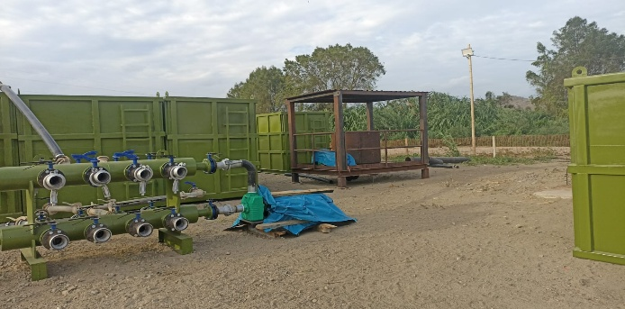
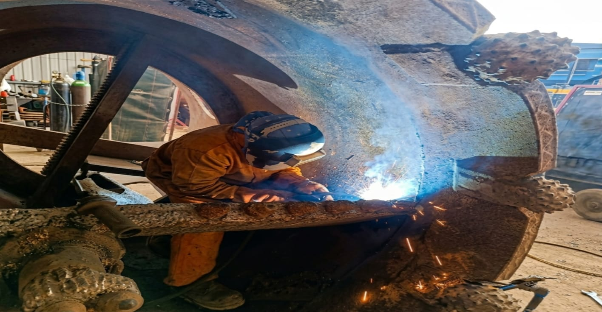
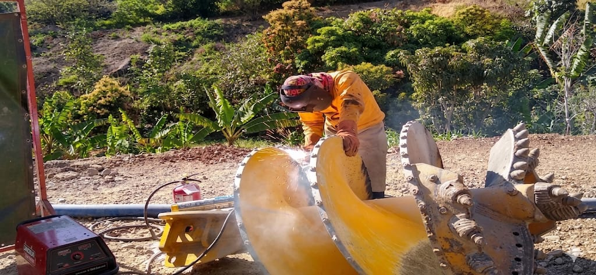
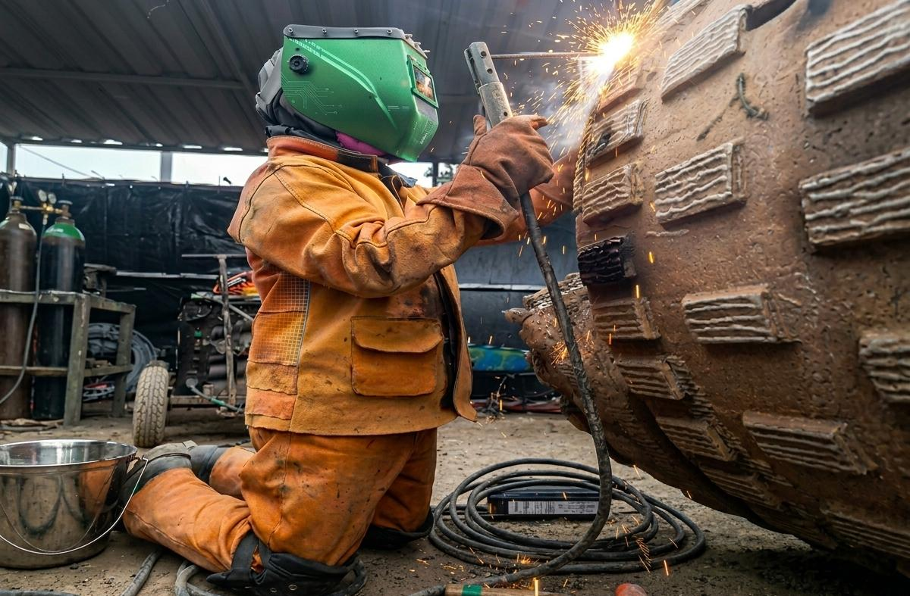
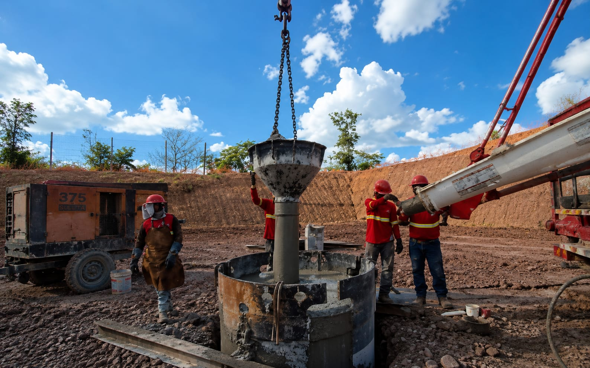
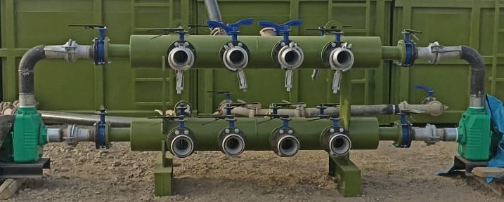

01

TECNOLOGIA & XTRUCTURA
Fabricación, reconstrucción y reparación de componentes industriales diseñados para maximizar rendimiento, confiabilidad y vida útil operativa.
Solicitar CotizaciónEn TX Ingeniería ofrecemos soluciones especializadas en reparación, reconstrucción y fabricación de equipos industriales para perforación, minería y cimentación.
Nuestro trabajo se basa en procesos controlados de ingeniería, recuperación estructural, mecanizado y aplicación de materiales de alta resistencia.
El objetivo es optimizar el rendimiento de los equipos, reducir costos operativos y extender su vida útil en condiciones extremas de trabajo.


Fabricación y reparación de sistemas de fluidos.
Ver servicio →

Equipos para extracción de muestras geológicas.
Ver servicio →
Fabricación y reparación industrial especializada.
Ver servicio →


Distribución uniforme en sistemas neumáticos.
Ver servicio →Nuestro equipo está listo para desarrollar soluciones adaptadas a tus necesidades operativas.
Solicitar Cotización